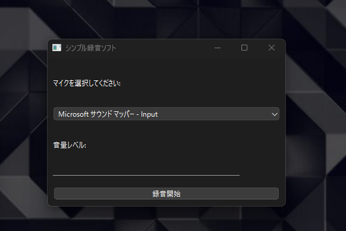
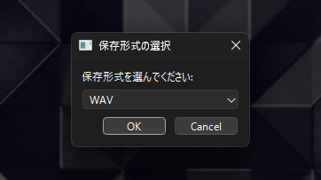

PYrecording software (音声録音ソフトウェア)
This software
シンプルで使いやすい録音ソフトウェアです。マイクを選択して簡単な録音が可能です。 PyQt6を使用したwindows対応のデスクトップアプリケーションです。(pythonのpyqt6なのでコンパイルすればlinux,macでも多分動きます)
module
- sys
- sounddevice as sd
- numpy as np
-
PyQt6.QtWidgets
- (QApplication, QMainWindow, QWidget, QVBoxLayout, QPushButton, QComboBox, QLabel, QMessageBox, QProgressBar, QInputDialog)
-
PyQt6.QtCore
- (QTimer)
- wave
- datetime (datetime)
- lameenc
compile
Nuitka
Python version
- 3.11
サンプル画像

マイク選択
接続されているマイクから選択可能

シンプルな操作
直感的なインターフェースで簡単にmp3-wav録音
主な機能
マイク選択
複数のマイクから録音デバイスを選択可能
軽量な動作
軽量な動作で録音が可能
シンプルな操作
直感的なインターフェースで簡単にmp3-wav録音
ダウンロード
現在、Windows版のみ提供しています。以下のボタンからダウンロードしてください。
Windows版をダウンロード (v1.0.0)※ 初回起動時にWindows Defenderの警告が表示される場合があります。
「詳細情報」→「実行」を選択して実行してください。